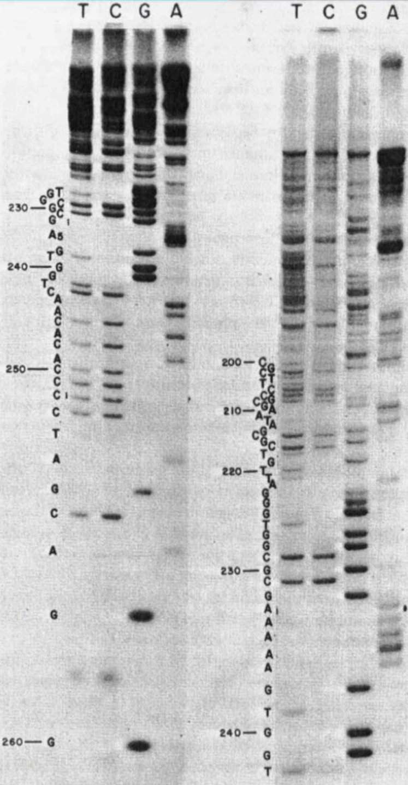
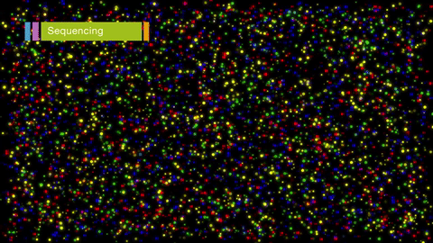

Applying Cloud Technology to Public Health Infectious Disease
Kelsey Florek, PhD, MPH Senior Genomics and Data Scientist Wisconsin State Laboratory of Hygiene December, 2022
Applying Genomics to Public Health Infectious Diseases
Pathogen Surveillance
SARS-CoV-2 Wastewater
SARS-CoV-2 Clinical
Resistance Detection
Outbreak Investigations
Evaluating Pathogen Trends
Next Generation Sequencing
What is Next Generation Sequencing?
Sanger Sequencing
Next Generation Sequencing (Illumina)
Increases in data requires advanced analyses (MiSeq)
- 15,000,000,000 ATGC's generated per sequencing run
- 40,000 - 150,000 words in a novel
- average word length in English is 4.79
- one sequencing run would generate 32,963 novels with 95,000 words each
Increases in data requires advanced analyses (Nextseq 2000)
- 360,000,000,000 ATGC's generated per sequencing run
- 40,000 - 150,000 words in a novel
- average word length in English is 4.79
- one sequencing run would generate 791,121 novels with 95,000 words each

Cloud Approaches to Bioinformatics
Managing a growing data infrastructure

Sequencing Data Infrastructure

Sequencing Analysis Infrastructure